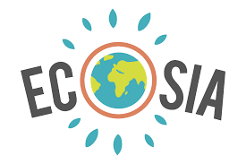

L’impact des data center sur l’environnement est un vrai problème. La production et la consommation de données sont
en forte hausse d’années en années. Alors découvrez quelques conseils pour réduire l’impact des data center.
Les besoins en data center évoluent en proportion puisqu’il est désormais nécessaire de stocker ses données, de
plus le confinement n’a pas arrangé les choses. A l’échelle mondiale, il y a 509,147 centres de données, soit
environ 5,955 terrains de foot. L’entassement des ordinateurs dans ces centres provoquent des émissions de chaleur,
il est donc nécessaire de les refroidir avec un système de refroidissement pour éviter un dysfonctionnement.
Justement comme dit dans l’article Pollution cachée les systèmes de refroidissement représente plus de 40% de
l’énergie qu’ils consomment.
Plusieurs grands géants du web ont déjà testé quelques solutions :
Microsoft a installé un data center sous la mer :
La mer constitue un système de refroidissement naturel.
L’entreprise Google a fait le choix d’implanter un centre de données à Hamina en Finlande. Les serveurs sont
refroidis grâce à l’eau glaciale de la mer, solution naturelle encore une fois. Mais l’entreprise est également
parvenue à réduire leurs consommations énergétiques à hauteur de 50% par rapport à la moyenne. L’entreprise utilise
un système de refroidissement par évaporation, des contrôles de température et un éclairage intelligent pour réduire
au mieux sa consommation d’énergie. De son côté l’entreprise Stimergy a inventé des salles serveur écoresponsable,
les serveurs sont immergés dans un bain d’huile, le principe est de récupérer la chaleur des serveurs pour la valoriser
puis utiliser pour chauffer l’eau d’une piscine ou pour chauffer un gymnase. Ainsi les salles serveur n’ont pas besoin
de système de climatisation ce qui rend la pollution moins importante. Toutes les solutions dites précédemment sont
à grande échelle mais voilà quelques conseils pour réduire votre impact sur les data center :
Vous pouvez tout d’abord désactiver vos notifications ainsi que trier vos e-mails, si vous ne le faite pas, vos
e-mails inutiles sont stockés sur un serveur et émettent 19 grammes de gaz à effet de serre par jour.
Chaque recherche Google émet 0,2 grammes de CO2, alors opter pour un moteur de recherche écoresponsable.
En voici deux exemples :
Lilo :
crée en 2015, par Clément Le bras et Marc Haussaire, Lilo est un moteur de recherche écoresponsable qui
reverse l’argent gagné par les recherches des utilisateurs a un projet qu’ils ont choisi.
Écosia :

crée en Allemagne en 2009, Écosia plante un arbre, partout dans le monde, à chaque recherche effectuée.
Le nombre actuel d’arbre plantés est d’environ 110 190 000 arbres.